5 Aerodynamics
Recurring Terminology
| Symbol | Definition |
|---|---|
| \(a\) | slope of lift curve, \(dC_L/d\alpha\) |
| \(\mathrm{ac}\) | aerodynamic center, location along the chord where pitching moments about this center do not change with angle of attack (25% \(\mathrm{MAC}\) for airfoils in subsonic flow, 50% \(\mathrm{MAC}\) for airfoils in supersonic flow) |
| \(\mathrm{AOA}\) | angle of attack |
| \(\mathrm{AR}\) | aspect ratio \(= [\text{wing span}]^2 / [\text{reference wing area}] = b^2/S\) |
| \(B\) | wing span |
| \(b_t\) | horizontal tail span |
| \(C\) | coefficient, a non-dimensional representation of an aerodynamic property |
| \(c\) | wing chord length Camber maximum curvature of an airfoil, measured at maximum distance between chord line and amber line, expressed in % of \(\mathrm{MAC}\). Camber line theoretical line extending from an airfoil’s leading edge to the trailing edge, located halfway between the upper and lower surfaces. |
| \(C_D\) | drag coefficient |
| \(C_{D_i}\) | induced drag coefficient |
| \(C_{D_0}\text{, }C_{D_{\mathrm{PE}}}\) | parasitic drag coefficient |
| \(c_f\) | friction coefficient |
| Chord | straight-line distance from an airfoil’s leading edge to its trailing edge |
| \(C_L\) | lift coefficient |
| \(C_p\) | pressure coefficient = \(\Delta p/q\) |
| \(e\) | Oswald efficiency factor |
| \(l\) | distance traveled by flow, or characteristic length of surface |
| \(M\) | Mach number |
| \(\mathrm{MAC}\) | mean aerodynamic chord, chord length of location on wing where total aerodynamic forces can be concentrated. |
| \(\mathrm{MGC}\) | mean geometric chord, the average chord length, derived only from a plan form view of a wing (similar to \(\mathrm{MAC}\) if wing has no twist and constant cross section & thickness-to-chord ratio). |
| \(P\) | pressure |
| \(P_\text{req'd}\) | power required |
| \(q\) | dynamic pressure = \(\frac{1}{2} \rho_a V_T^2 = \frac{1}{2} \rho_0 V_T^2\) |
| \(R\) | gas constant |
| \(\mathrm{Rn},\mathrm{Re}\) | Reynolds number |
| \(S\) | reference wing area, includes extension of wing to fuselage centerline. |
| \(S_t\) | horizontal tail surface area |
| \(S_W\) | wetted area of surface |
| \(T\) | temperature |
| \(V\) | true velocity |
| \(V_e\) | equivalent velocity |
| \(\alpha\) | angle of attack |
| \(\alpha_i\) | induced angle of attack |
| \(\delta\) | depth of boundary layer, or surface wedge angle |
| \(\mu\) | viscosity, or wave angle |
| \(\nu\) | flow turning angle |
| \(\theta\) | shock wave angle |
| \(\rho\) | density |
- Perfect Fluid
- incompressible, inelastic, and non-viscous
- used in flow outside of boundary layers at \(M\) < .7
- Incompressible, inelastic, viscous
- used for boundary layer studies at \(M\) < .7
- Compressible, non-viscous, elastic fluid
- used outside boundary layers up to \(M\) = 5
5.1 Dimensional Analysis Interpretations
(ref 5.2)
Aerodynamic force = \(F\)
- \(F = f \left( \rho \text{, } \mu, T \text{, } V \text{, shape, orientation, size, roughness, gravity} \right)\)
- For aircraft ignore \(R\), \(K\) & hypersonic effects

- Initially assume similar body orientations, shapes & roughness.
- Dimensional Analysis reveals four non-dimensional (\(\pi\)) parameters:
- Force Coefficient \(\pi_1 = \frac{F}{\rho V^2 l^2}\)
- Reynolds Number \(\pi_2 = \frac{\rho V l}{\mu}\)
- Mach Number \(\pi_3 = \frac{V}{a}\)
- Froude Number \(\pi_4 = \frac{V}{\sqrt{lg}}\)
A closer look at the force coefficient:
\[C_F = \frac{F}{\rho V^2 l^2} => \frac{F}{\frac{1}{2} \rho V^2 S} \]
where \(\frac{1}{2} \rho_a V_T^2 = \frac{1}{2} \rho_0 V_e^2 = \text{dynamic pressure}\text{, }q\)
Dimensions of reference wing area, \(S\) are the same
A feel for \(q\)
- Kinetic energy of a moving object = \(\frac{1}{2} m V_T^2\)
- Block of moving air kinetic energy = \(\frac{1}{2} \rho \text{ (volume) } V_T^2\)
- Dividing through by volume yields \(\mathrm{KE}\) per volume of moving air = \(\frac{1}{2} \rho V_T^2\)
- “Dynamic pressure” or “\(q\)” = potential for converting each cubic foot of the airflow’s kinetic energy into frontal stagnation pressure
- Feel \(q\) by extending your hand out the window of a moving car
A feel for coefficients
- \(C_F = (F/S)/q\) = the ratio between the total force pressure and the flow’s dynamic pressure
- Lift is the component of the total force perpendicular to the free stream flow
- Drag is the component along the flow
- Break total into lift and drag coefficients:
- \(C_L = (L/S)/q\)
- \(C_D = (D/S)/q\)
- Increasing dynamic pressure generates a larger total force, lift and drag
- Froude number is not significant in aerodynamic phenomena
- Recall that forces are also a function of angle of attack, shape & surface roughness, therefore
\[C_L,C_D = f \left[ M \text{, } \mathrm{Re} \text{, } \alpha \right] \text{ for a given shape, roughness} \]

Note in the figure above the Reynolds effects are exaggerated
To compare test day and standard day aircraft or to match wind tunnel \(C_F\) data to actual aircraft; the shape, roughness, \(M\), \(\mathrm{Rn}\) and \(\alpha\) must be equal for both aircraft

\[\frac{L_A}{q_A S_A} = C_L = \frac{L_M}{q_M S_M} \]
5.2 General Aerodynamic Relations
(refs 5.1, 5.2, 5.10)
Lift & Drag forces can be described using two approaches:
- Change in momentum of airstream, \(F=d[mv]/dt\)
- “Bernoulli” approach which requires the continuity and conservation of energy equations
Continuity Equation
Fluid Mass in = Fluid Mass out
\[\rho_1 V_1 A_1 = \rho_2 V_2 A_2\]
For subsonic (incompressible) flow \(\rho_1 = \rho_2\)
\[V_1 A_1 = V_2 A_2\]
Conservation of Energy (Bernoulli) Equation:
Potential + Kinetic + Pressure = constant (changes in Potential energy are negligible)
Energy per unit volume is pressure then Dynamic Pressure + Static Pressure = Total Pressure
\[\frac{1}{2}\rho V^2 + p_s = \text{constant} \] \[\frac{1}{2}\rho V^2 + p_s = p_t \]
- This classic approach only applies in the “potential flow” region and not in the boundary layer where energy losses occur
- Pressures around a surface can be calculated or measured from tests and converted into pressure coefficients,
\[c_p = \left( p_{\mathrm{local}} - p_{\mathrm{ambient}} \right) / \text{dynamic pressure} = \Delta p/q \]
- \(c_p\) values can be mapped out for all surfaces
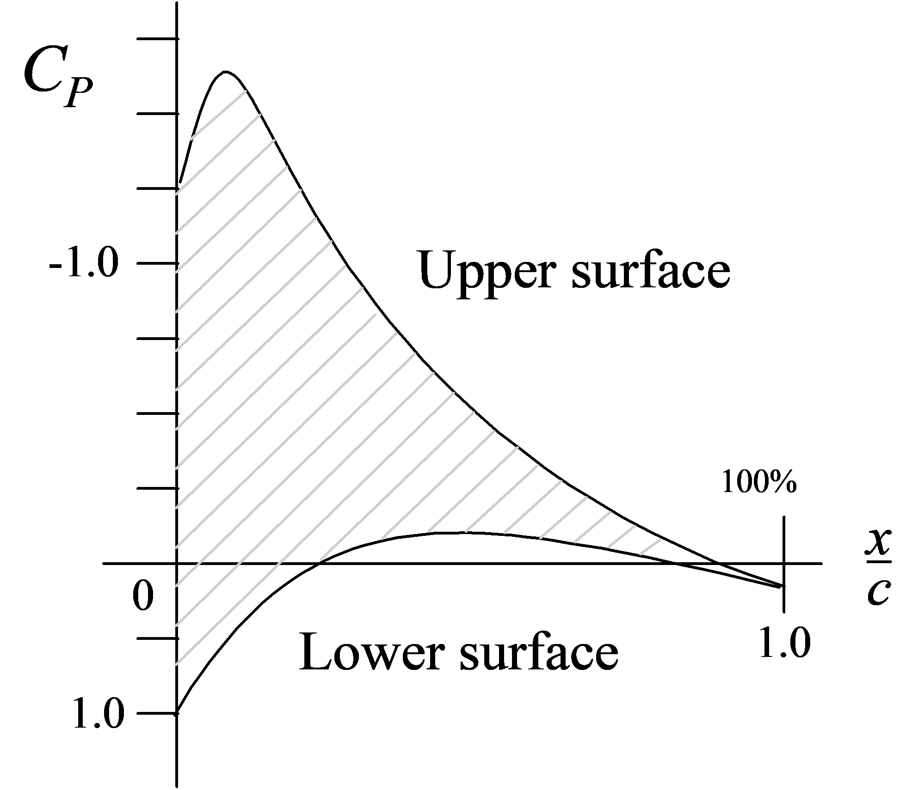
- Summation of all pressures perpendicular to surface yield the pitching moments and the “Resultant Aerodynamic Force” which is broken into lift and drag components
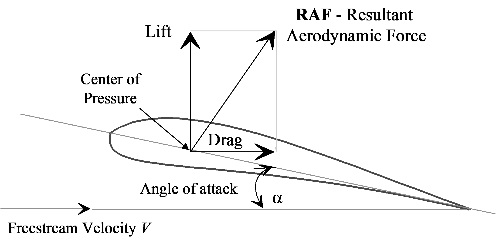
- Lift & drag forces are referred to the aerodynamic center (\(\mathrm{ac}\)) where the pitching moment is constant for reasonable angles of attack.
- Pitching moments increase with airfoil camber, are zero if symmetric.
- Aerodynamic center is located at 25% \(\mathrm{MAC}\) for fully subsonic flow and at 50% \(\mathrm{MAC}\) for fully supersonic flow.
5.3 Wing Design Effects on Lift Curve Slope
(refs 5.1, 5.2, 5.10)
Aspect Ratio Effect
- Pressure differential at wingtip causes tip vortex

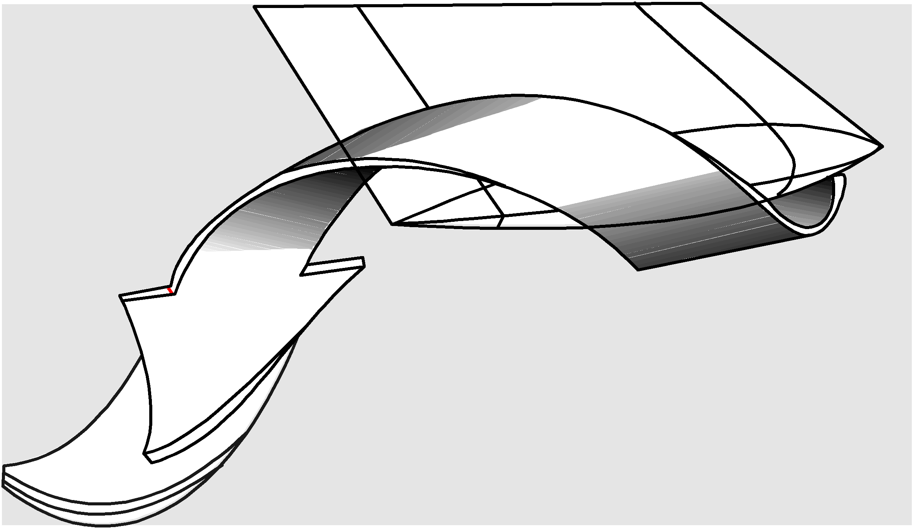
- Vortex creates flow field that reduces \(\mathrm{AOA}\) across wingspan
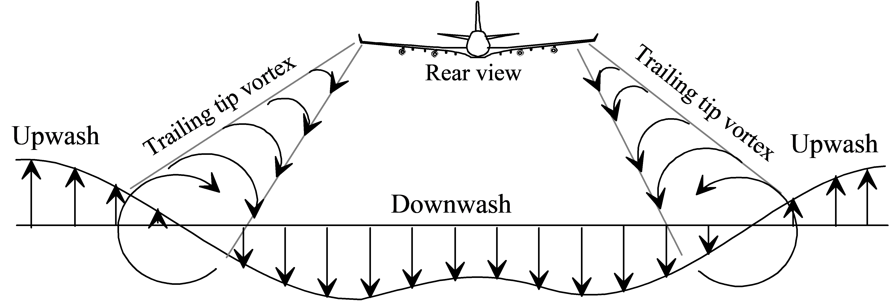
- Local \(\mathrm{AOA}\) reductions decrease average lift curve slope
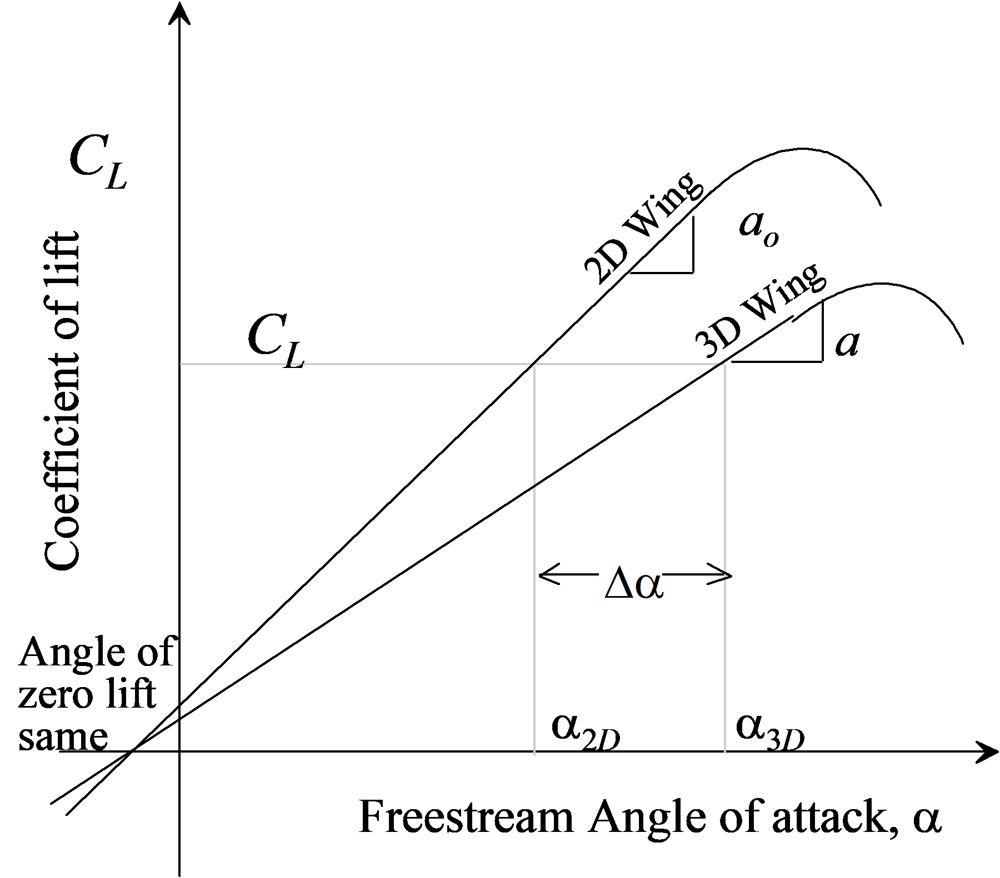
2D wing = wind tunnel airfoil extending to walls (infinite aspect ratio).
\(a_0 = \text{Lift curve slope for an infinite wing}\)
\(a = \text{Lift curve slope for a finite wing}\)
- Above relationship estimated as \(\alpha = \frac{dC_L}{d \alpha} = \frac{a_0}{1+\frac{57.3 a_0}{\pi \mathrm{AR}}}\)
Trailing Edge Flap Effects
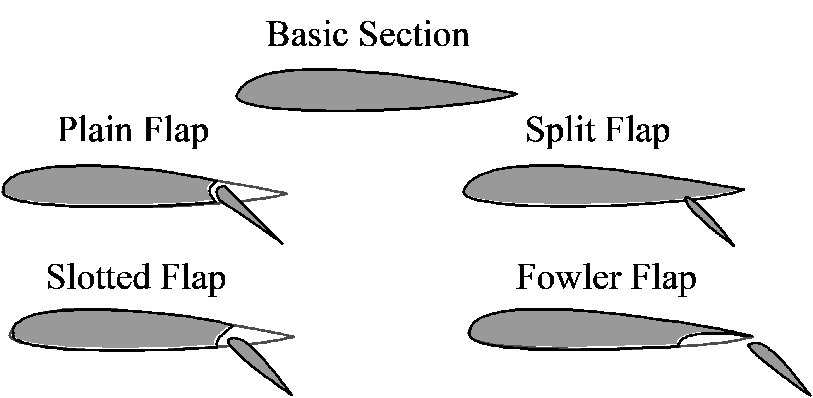

Leading Edge Flap Effects

Boundary Layer Control Effects

5.4 Elements of Drag
(refs 5.1, 5.2, 5.10)
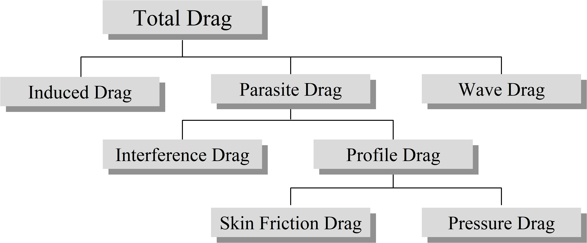
- Skin friction shear stress is a function of velocity profile at surface

Shear stress \(\tau_w = \mu \left( \frac{dv}{dy} \right)_{y=0}\)
- Viscosity \(\mu\) increases with temperature (ref 5.9)
Sutherland law: \(\mu = \mu_0 \frac{\left( \frac{T}{T_0} \right)^{1.5} \left( T_0 + S \right)}{\left( T + S \right)}\)
Power law: \(\mu = \mu_0 \left( \frac{T}{T_0} \right)^n\)
Where \(T_0 = 273.15 \text{K} = 518.67 \text{R}\)
For air: \(S = 110.4 \text{K} = 199 \text{R} \text{; n=0.67}\)
For air at \(273\) K : \(\mu_0 = 1.717 \times 10^{-5} \left[\text{kg/m s}\right] = 3.59 \times 10^{-7} \left[\text{slug/ft s}\right]\)
Inserting air values (\(T_K=\)Kelvin and \(T_R=\)Rankin) into Sutherland law gives
\[\mu = 1.458 \times 10^{-6} \frac{T_K^{1.5}}{T_K+110.4} \left[\frac{\text{kg}}{\text{s m}}\right] = 2.2 \times 10^{-8} \frac{T_R^{1.5}}{T_R+199} \left[\frac{\text{slug}}{\text{s ft}}\right]\]
5.4.1 Reynolds Number Effects
(ref 5.10)
- Laminar boundary layers have more gradual change in velocity near surface than turbulent boundary layers.
- High Reynolds numbers help propagate turbulent flow.
Shearing stress: \(\tau_w = \mu \left(\frac{dv}{dy}\right)_{y=0}\)
Skin friction coefficient: \(C_f = \frac{\tau_w}{\frac{1}{2}\rho_{\infty} V_{\infty}^2} = \frac{\tau_w}{q_{\infty}}\)
Laminar boundary layer: \(\text{Total } C_f = \frac{1.328}{\left(\mathrm{Re}_L \right)^{1/2}}\)
Turbulent boundary layer: \(\text{Total } C_f = \frac{0.455}{\left(\log(\mathrm{Re}_L)\right)^{2.58}} \approx \frac{0.074}{\left(\mathrm{Re}_L\right)^{1/5}}\)
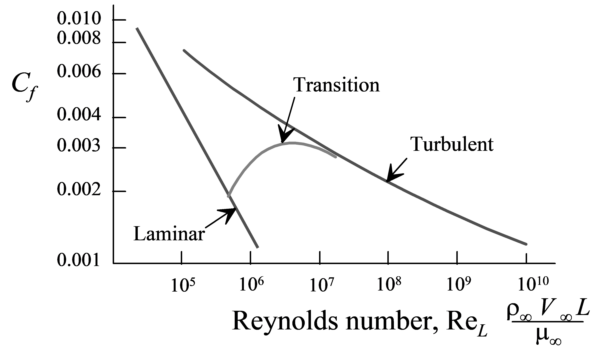
\(\mathrm{Re}_L\) based on total length of flat plate
- Depth of boundary layer \((\delta)\) depends on local Reynolds number \((\mathrm{Re}_x)\) and whether the flow is turbulent or laminar.
\[\mathrm{Re}_x = \frac{\rho_{\infty} V_{\infty} x}{\mu_{\infty}} \equiv \frac{\text{Inertia Forces}}{\text{Viscous Forces}} \]
\(x =\) distance traveled to point in question
\[\delta_{\mathrm{lam}} = \frac{5.2x}{\sqrt{\mathrm{Re}_x}} \]
\[\delta_{\mathrm{turb}} = \frac{0.37x}{\mathrm{Re}_x^{0.2}} \]
5.4.2 Pressure Drag
- Ideal frictionless flow has no losses and leads to zero pressure drag
- Real fluids have friction and energy losses along surface
- Energy losses negate total pressure recovery, lead to decreasing total pressure along surface
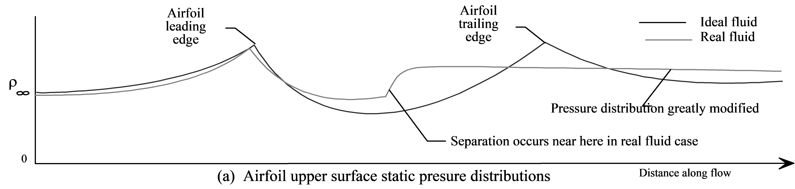
- Imbalance of pressures on surfaces causes pressure drag
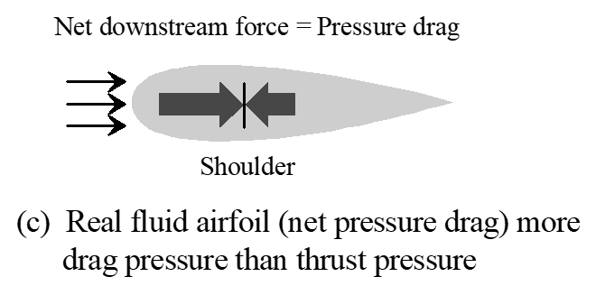
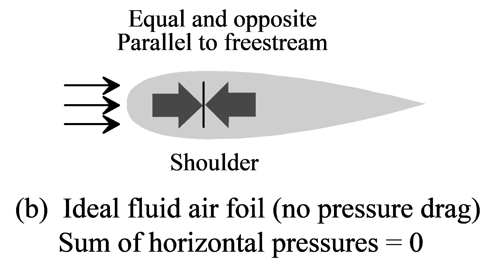
- Profile streamlining reduces pressure drag
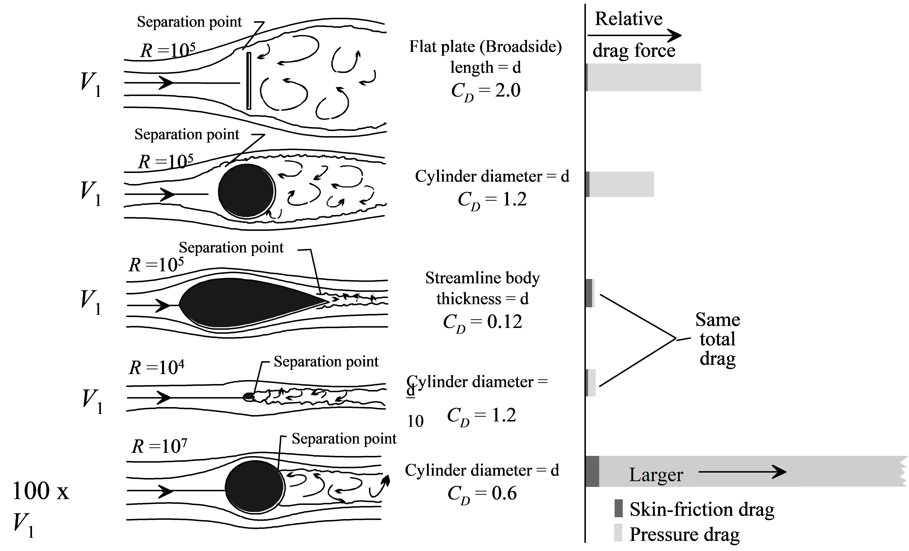
5.4.3 Interference Drag
- Occurs with multiple surfaces approximately parallel to flow
- Caused by flow’s interference with itself or by excessive adverse pressure gradient due to rapidly decreasing vehicle cross section
- Most severe with surfaces at acute angles to each other
- Effects often reduced by fillets around contracting surfaces

5.4.4 Induced Drag
- Wingtip vortex reduces local \(\mathrm{AOA}\) at each station along wing
- Local lift vector is perpendicular to local \(\mathrm{AOA}\)
- Local lift vector is therefore tilted back relative to freestream lift
- Induced drag defined as rearward component of local lift vector

Induced Drag \[\left(D_i\right)=L\left(\alpha_i\right)\]
For elliptical lift distributions \(\alpha_i = \frac{C_L}{\pi \mathrm{AR}}\)
\[\therefore D_i = L \left(\frac{C_L}{\pi \mathrm{AR}}\right) \text{ but } L=qSC_L \]
\[C_{D_i} = \frac{D_i}{qS} = \frac{C_L^2}{\pi \mathrm{AR}}\]
Oswald efficiency factor, \(e\), accounts for losses in excess of those predicted above (due to uneven downwash and changing interference drag effects).
\[\therefore C_{D_i} = \frac{C_L^2}{\pi \mathrm{AR} e}\]
5.5 Aerodynamic Compressibility Relations
(ref 5.8)
Prandtl/Glauert Approximation
Approximates Mach effects on aerodynamics below critical Mach
\[C_{P_{\mathrm{compressible}}} = \frac{1}{\sqrt{1-M^2}}C_{P_{\mathrm{incompressible}}} \]
Total vs Ambient Property Relations for Adiabatic Flow
\[\frac{T_T}{T} = 1 + \frac{\gamma -1}{2}M^2 \text{ Isentropic flow not required}\] \[\frac{P_T}{P} = \left[1 + \frac{\gamma - 1}{2}M^2 \right]^{\frac{\gamma}{\gamma-1}} \text{ Isentropic (shockless) flow required}\] \[\frac{\rho_T}{\rho} = \left[1 + \frac{\gamma - 1}{2} M^2 \right]^{\frac{1}{\gamma -1}} \text{ Isentropic flow required} \]
Normal Shock Relations
Assumes isentropic flow on each side of the shock Assumes flow across shock is adiabatic Property changes occur in a constant area (throat)
\[\frac{P_2}{P_1} = \frac{1 - \gamma + 2\gamma M_1^2}{1+\gamma} \] \[\frac{\rho_2}{\rho_1} = \left[\frac{2 + \left(\gamma - 1\right) M_1^2}{\left(\gamma+1\right) M_1^2} \right]^{-1} \] \[\frac{T_2}{T_1} = \left[\frac{1 - \gamma + 2\gamma M_1^2}{1 + \gamma} \right]\left[\frac{2 + \left(\gamma - 1\right) M_1^2}{\left(1 + \gamma\right) M_1^2} \right] \] \[M_2^2 = \frac{M_1^2 + \frac{2}{\gamma - 1}}{\frac{2\gamma}{\gamma-1} M_1^2-1} \]
Normal shock summary
\(P_{T_1} > P_{T_2}\)
\(P_{1} < P_{2}\)
\(\rho_{T_1} > \rho_{T_2}\)
\(\rho_{1} < \rho_{2}\)
\(T_{T_1} > T_{T_2}\)
\(T_{1} < T_{2}\)
\(M_1 > M_2\)
\(s_1 < s_2\)
5.5.1 Oblique Shocks
Oblique Shock Description

\[\delta = \text{surface turning angle}\]
\[\theta = \text{shock wave angle}\]
\[\text{Subscript 1 denotes upstream conditions}\]
\[\text{Subscript 2 denotes downstream conditions}\]
Oblique Shock Relations
- Calculate \(P_2/P_1\), \(T_2/T_1\), and \(\rho_2/\rho_1\) across oblique shocks by using normal shock equations and substituting \(M_1 \sin\theta\) in place of \(M_1\)
- Calculate total pressure loss across oblique shock as
\[\frac{P_{T_2}}{P_{T_1}} = \left[\left[\frac{\gamma - 1}{\gamma + 1} + \frac{2}{{\left(\gamma + 1\right)M_1^2\sin^2\theta}}\right]^{\gamma} \left[\frac{2\gamma}{\gamma+1} M_1^2\sin^2\theta - \frac{\gamma - 1}{\gamma + 1} \right]\right]^{\frac{1}{1 - \gamma}} \]
- Calculate relation between Mach number and angles as
\[M_2^2\sin^2\left(\delta - \theta\right) = \frac{M_1^2 \sin^2\theta + \frac{2}{\gamma-1}}{\frac{2\gamma}{\gamma - 1} M_1^2\sin^2\theta - 1} \]
Oblique Shock Turning Angle as a Function of Wave Angle

- Two \(\theta\) solutions exist for every \(M_1\) & \(\delta\) combination
- These represent the strong and weak shock solutions
- Weak shocks normally occur in nature
- There is a minimum Mach number for each turning angle
- The wave angle of a weak shock decreases with increased Mach
- For a given Mach number, \(\theta\) approaches \(\mu\) as \(\delta\) decreases
Mach Cone Angle

Minimum Wave Angle: \(\mu = \sin^{-1}\left(1/M\right)\)
5.5.2 Supersonic Isentropic Expansion Relation
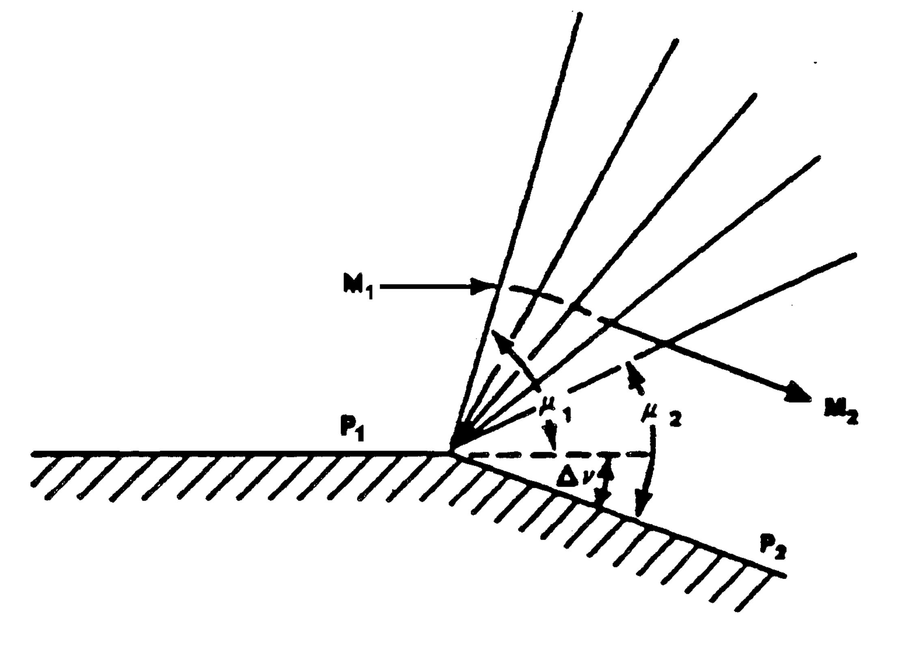
- The wave angle \(\mu\) determines where the lower pressure can be felt and thus where the flow can be accelerated
- As the flow accelerates, a new wave angle forms and the subsequent lower pressure further accelerates the flow
- Results in a series of Mach waves forming a “fan” until the flow turns and accelerates so that it is parallel to the new boundary
Prandtl-Meyer Function
Shows flow’s required turning angle (\(\nu\)) to accelerate from one Mach number to another
\[\nu_M = \sqrt{\frac{\gamma + 1}{\gamma - 1}} \left[\tan^{-1}\sqrt{\frac{\gamma - 1}{\gamma + 1} \left(M^2 - 1\right)} \right] - \tan^{-1}\sqrt{M^2-1} \]
- If upstream Mach \((M_1) = 1\), then \(\nu_1 = 0\), and equation directly relates downstream Mach (\(M_2\)) to surface turning angle (\(\Delta \nu\))
- If \(M_1 > 1\), determine \(M_2\) as follows:
- Calculate upstream ν1 from above equation
- Calculate \(\nu_2 = \nu_1 + \Delta \nu\)
- Reverse above equation to obtain corresponding \(M_2\)
- Above equation is tabulated in NACA TR 1135 and is plotted below

Example: Flow initially at \(M_1 = 2.0\) accelerates through an expansion corner of 24 deg. Exit Mach number is 3.0
5.5.3 Two-Dimensional Supersonic Airfoil Approximations
- Determine surface static pressures by calculating changes through obliques shocks and expansion fans
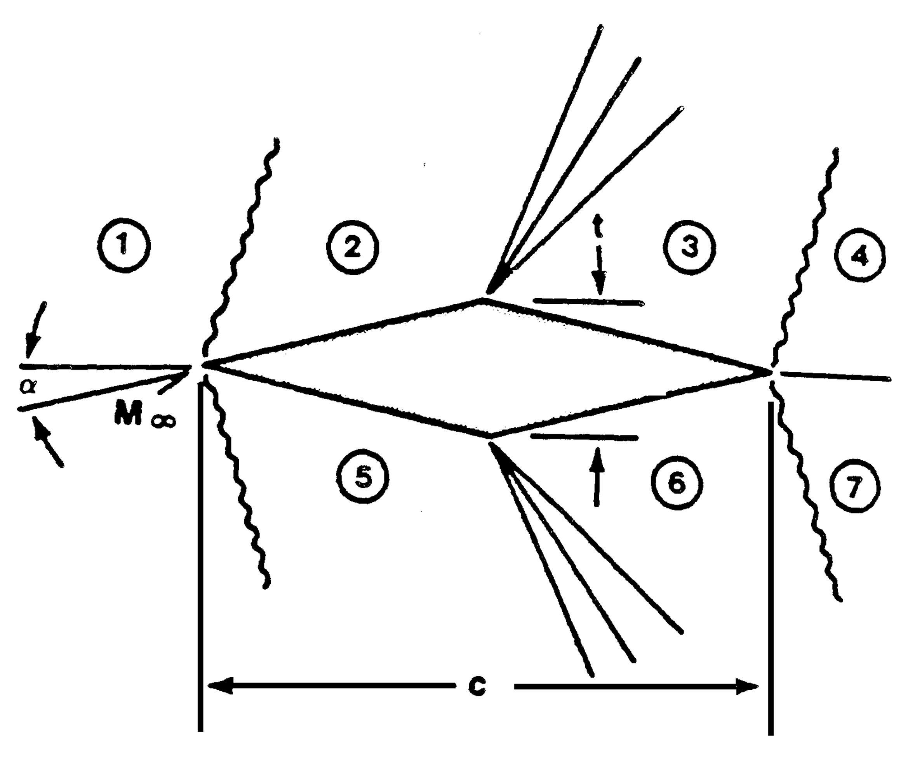
- Ackert approximations for thin wings are based on
\[C_p = \frac{\Delta P}{q} \cong \pm\frac{2 \delta}{\sqrt{M^2 - 1}} \]
- Double wedge airfoil approximations
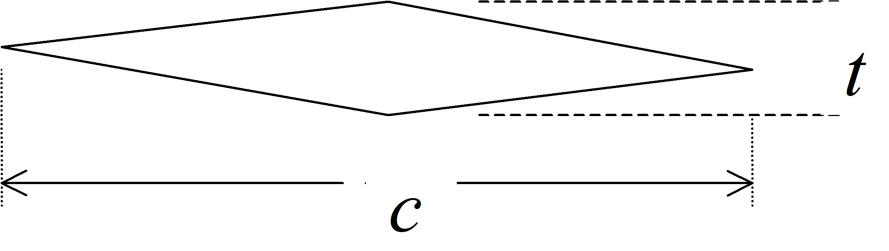
\[C_L \cong \frac{4 \alpha}{\sqrt{M^2 - 1} }\]
\[C_D \cong \frac{4 \alpha^2}{\sqrt{M^2 - 1}} + \frac{4}{\sqrt{M^2 - 1}}\left(\frac{t}{c}\right)^2\]
- Biconvex wing approximations

\[C_L \cong \frac{4 \alpha}{\sqrt{M^2 - 1} }\]
\[C_D \cong \frac{4 \alpha^2}{\sqrt{M^2 - 1}} + \frac{5.33}{\sqrt{M^2 - 1}}\left(\frac{t}{c}\right)^2\]
5.6 Drag Polars
(ref 5.2)
5.6.1 Drag Polar Construction and Terminology
\(C_L = \text{lift coefficient}\)
\(C_D = \text{drag coefficient}\)
\(C_{D_i} = \text{induced drag coefficient}\)
\(C_{D_0} = \text{parasitic drag coefficient}\)
\(\mathrm{AR} = \text{aspect ratio}\)
\(e = \text{Oswald efficiency factor}\)
\(l = \text{length flow has traveled}\)
\(S_{\mathrm{wet}} = \text{wetted area of surface}\)
\(S = \text{reference wing area}\)
Simple Drag Polar Equation Limitations
- No separated flow losses
- Symmetric Camber
- Applies at one Mach, Altitude, \(\mathrm{cg}\)
\[C_D = C_{D_0} + \frac{C_L^2}{\pi \mathrm{AR} e} = C_{D_0} + C_{D_i}\]
“Polar” form of simple drag polar:

Linearized form of simple drag polar:

5.6.2 Complicating Factors
Airflow Separation Effects

Drag Polar Equation Accounting for Flow Separation:
\[C_D = C_{D_{\mathrm{min}}} + \frac{\left(C_L - C_{L_{\mathrm{min}}}\right)^2}{\pi \mathrm{AR} e} +k_2\left(C_L - C_{L_{\mathrm{break}}}\right)\]
- Delete last term if \(C_L < C_{L_{\mathrm{break}}}\)
- Determine \(k_2\) from flight test
Reynolds Number Effects
(refs 5.4, 5.11)
- Calculate length \(\mathrm{Re}_L\) and friction coefficient (\(c_f\)) for each surface as
\[\mathrm{Re}_L = \frac{\rho Vl}{\mu} = 7.101 \times10^6 \left[\frac{\delta}{\theta^2} \right]\left[\frac{T_K + 110}{398}\right] l \]
\(T_K = \text{Kelvin}\)
\(l = \text{total length, ft}\)
\[c_f = \left[\frac{1.328}{\sqrt{\mathrm{Re}_L}}\right] \left[1 + 0.1305 M^2 \right]^{-0.12} \text{ laminar}\] or \[c_f = \left[\frac{0.074}{\left(\mathrm{Re}_L\right)^2} - \frac{1700}{\mathrm{Re}_L} \right] \text{ transition}\] or \[c_f = 0.455\left[\log \mathrm{Re}_L\right]^{-258} \left[1 + 0.144 M^2\right]^{-0.65} \text{ turbulent}\]
- In general, \(c_f\) decreases as \(\mathrm{Rn}\) increases (unless transitioning from laminar to turbulent flow)
- Friction drag \(= c_f q S_{\mathrm{wet}}\) for each component (\(S_{\mathrm{wet}} = \text{wetted area}\))
- Correct from test day to standard day aircraft drag coefficient by summing differences of each component’s drag change
\[\Delta C_D = \frac{\sum\left(c_{f_s} - c_{f_t} \right) S_{\mathrm{wet}}}{S} \]
Wing Camber or Incidence Angle Effects
Note slight increase in drag as lift decreases towards zero
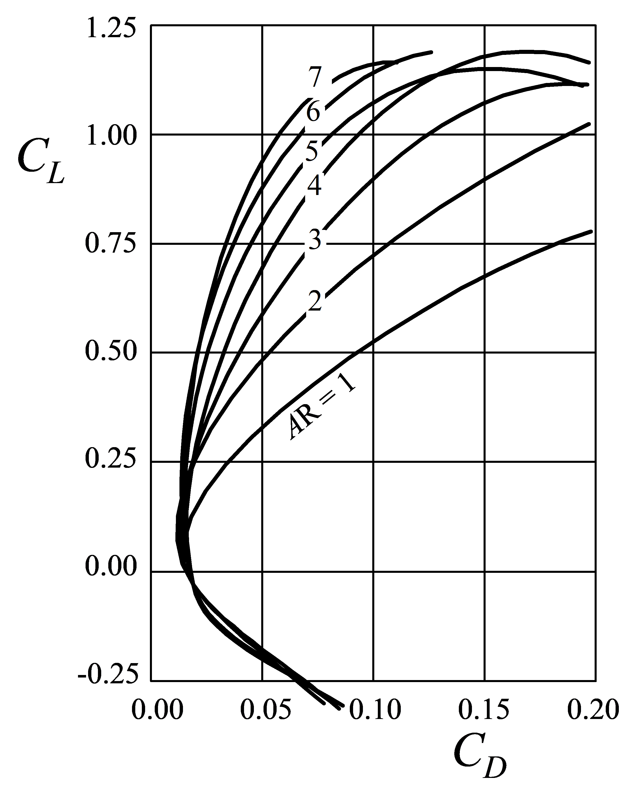
Linearized drag polar for aircraft with wing camber and/or incidence
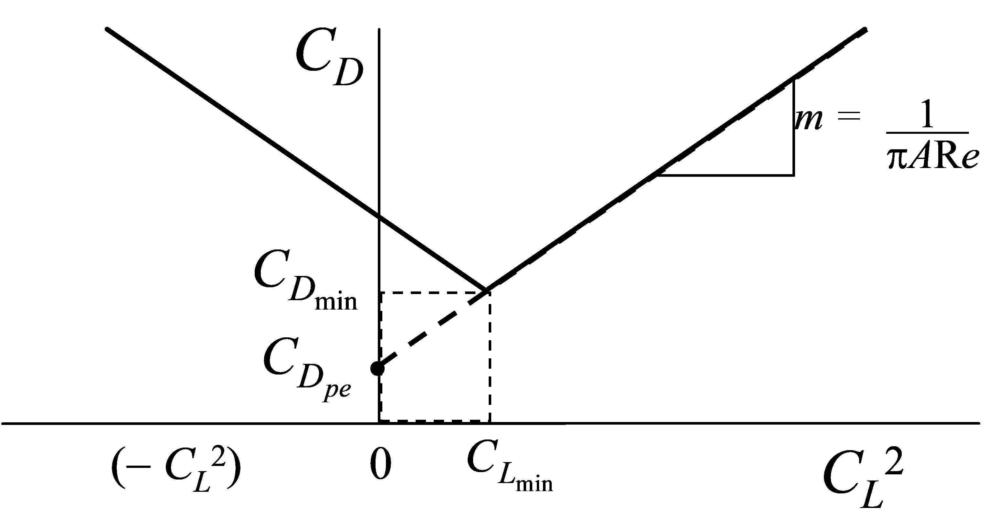
Revised drag polar equation accounting for wing camber or incidence
\[C_D = C_{D_{\mathrm{min}}} + \frac{\left(C_L - C_{L_{\mathrm{min}}} \right)^2}{\pi \mathrm{AR} e} \]
- Generally not necessary since most flight occurs above \(C_{L_{\mathrm{min}}}\)
Mach Number Effects
- Aircraft with low parasitic drag coefficients and high fineness ratios pay a relatively small “wave drag” penalty.
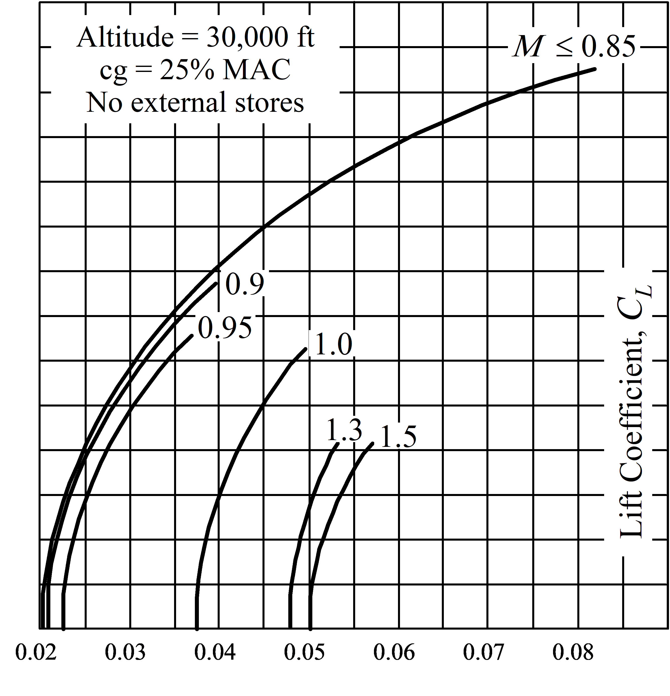
- With external stores, same aircraft pays larger Mach penalty
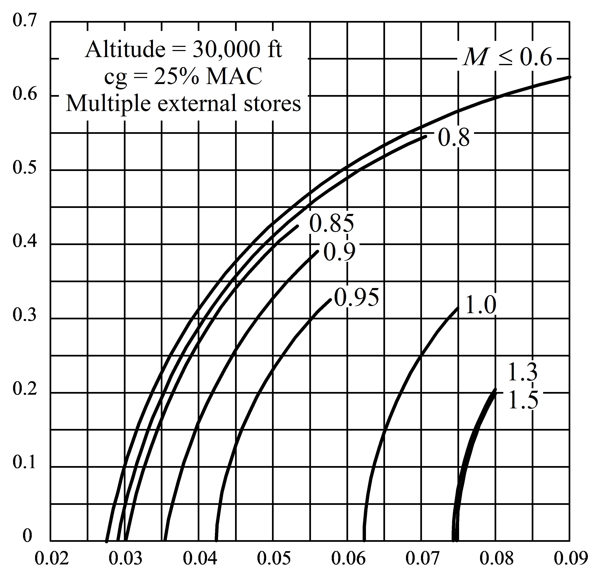
Propeller Slipstream Effects
- a.k.a “scrubbing” drag
- Propwash increases flow speed over surface within slipstream
- More drag is created by higher \(q\) and vorticity.
- Function of prop speed and power absorbed (\(C_p\)) or thrust (\(C_T\))
- Problem should be addressed in airframe or propeller models
Trim Drag Effects
(ref 5.4)
\(e = \text{wing Oswald efficiency factor}\)
\(e_t = \text{tail Oswald efficiency factor}\)
\(b = \text{span}\)
\(b_t = \text{tail span}\)
\(x = \text{wing ac-to-cg distance}\)
\(l = \text{wing ac to tail ac distance}\)
\(S = \text{Area}\)
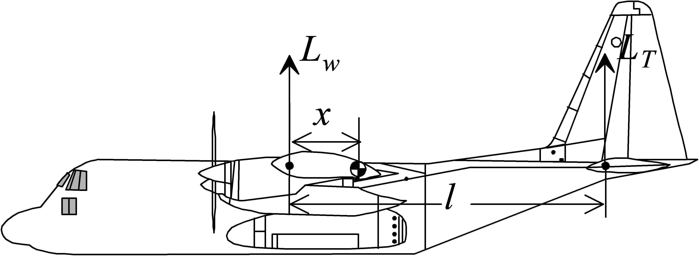
\[C_{D_{\mathrm{trim}}} = \frac{W^2}{\pi q^2 Sb^2e} \left[\frac{2}{lW}\left[x_0 - x_1\right] + \frac{1}{l^2} \left[1 + \frac{S}{S_t} \frac{e}{e_t} \left(\frac{b}{b_t}\right)^2\right] \left[x_0^2 - x_1^2\right] \right]\]
Trim drag change relative to total induced drag:
\[\frac{\Delta C_{D_{\mathrm{trim}}}}{\Delta C_{D_i}} = \frac{x}{l} \left[\frac{x}{l} \left(\frac{b}{b_t}\right)^2 \frac{e}{e_t} - 2 \right] \]
Plot of above equation

5.6.3 Drag Polar Analysis
\[D = \bar{q}SC_D = \bar{q}S \left[C_{D_0} + \frac{C_L^2}{\pi \mathrm{AR} e} \right] = \frac{1}{2}\rho_0 V_e^2 S\left[C_{D_0} + \frac{W^2}{\pi \mathrm{AR} e \left(\frac{1}{2} \rho_0 V_e^2 S \right)^2} \right]\]
- For a given configuration (\(C_{D_0} \text{, } S \text{, } \mathrm{AR} \text{, } e\))
\[D = k_1 V_e^2 + k_2 \frac{W^2}{V_e^2} \]
first term = parasitic drag, second term = induced drag
- For any given weight, \(D = f(\text{equivalent airspeed})\) only
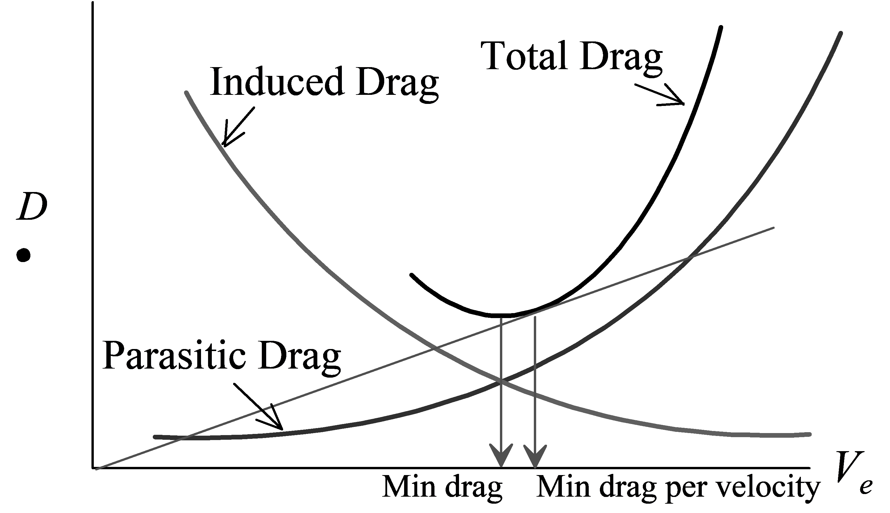
- Minimum total drag occurs when \(D_{\mathrm{induced}} = D_{\mathrm{parasitic}}\)
- same as speed where \(C_{D_i} = C_{D_0}\)
- occurs at max \(C_L/C_D\) ratio (same as max \(L/D\) ratio)
- Minimum drag/velocity occurs at min slope of Drag vs V curve
- same as speed where \(3C_{D_i} = C_{D_0}\)
- occurs at max \(C_L^{1/2}/C_D\) ratio
Power required = drag x true airspeed
\[P_{\mathrm{req}} = DV_T = D\frac{V_e}{\sqrt{\sigma}} = k_1\frac{V_e^3}{\sqrt{\sigma}} + k_2\frac{W^2}{\sqrt{\sigma}V_e} \]
Minimum total \(P_{\mathrm{req'd}}\) occurs when \(P_{\mathrm{induced}} = P_{\mathrm{parasitic}}\)
- same as speed where \(C_{D_i} = 3C_{D_0}\)
- occurs at max \(C_L^{3/2}/C_D\) ratio
Minimum power/velocity occurs at min slope of \(P_{\mathrm{req'd}}\) vs \(V\) curve
- same as speed where \(C_{D_i} = C_{D_0}\)
- occurs at max \(C_L /C_D\) ratio
Optimum Aerodynamic Flight Conditions
Gliders/ Engine-Out Flight
- Max range (minimum glide slope) occurs at max \(C_L/C_D\)
- same as condition where \(C_{D_0} = C_{D_i}\) if drag polar is parabolic
- Min sink rate (minimum power req’d) occurs at max \(C_L^{3/2} /C_D\) ratio same as condition where \(3C_{D_0} = C_{D_i}\) if drag polar is parabolic
Reciprocating Engine Aircraft (assuming constant \(\mathrm{BSFC}\) & prop \(\eta\))
- Max range (minimum power/velocity) occurs at max \(C_L/C_D\) ratio
- same as condition where \(C_{D_0} = C_{D_i}\) if drag polar is parabolic
- Max endurance (minimum power req’d) occurs at max \(C_L^{3/2} / C_D\)
- same as condition where \(3C_{D_0} = C_{D_i}\) if drag polar is parabolic
Turbine Jet Engine Aircraft (assuming constant \(\mathrm{TSFC}\))
- Max range at constant altitude (minimum drag/velocity)
- occurs at max \(C_L^{1/2} / C_D\) ratio
- same as condition where \(C_{D_0} = 3C_{D_i}\) if drag polar is parabolic
- Best cruise/climb range (maximum \(\left[M \times L/D \right]\) ratio)
- occurs at max \(C_L/C_D^{3/2}\) ratio
- same as condition where \(C_{D_0} = 2C_{D_i}\) if drag polar is parabolic
- Best endurance (minimum drag)
- occurs at max \(C_L/C_D\) ratio
- same as condition where \(C_{D_0} = C_{D_i}\) if drag polar is parabolic
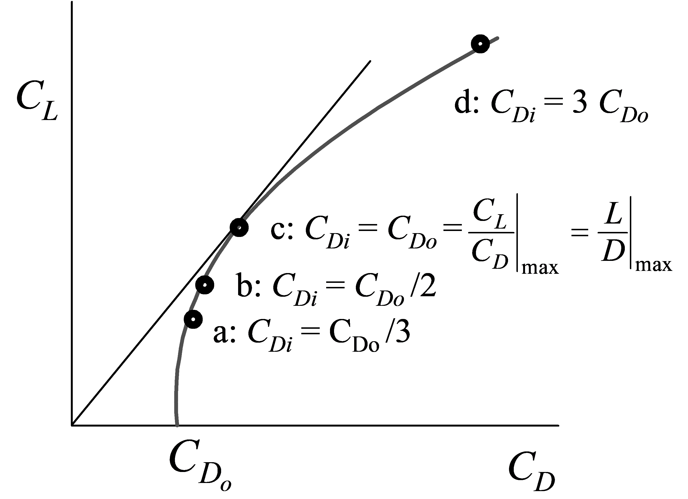
To calculate optimum speed \(V_2\) for configuration2 & weight2 based on optimum speed \(V_1\) at configuration1 & weight1
5.7 References
| 5.1 | Roberts, Sean “Aerodynamics for Flight Testers” Chapter 3, Subsonic Aerodynamics, National Test Pilot School, Mojave, CA, 1999 |
| 5.2 | Lawless, Alan R., et al, “Aerodynamics for Flight Testers” Chapter 4, Drag Polars, National Test Pilot School, Mojave ,CA, 1999 |
| 5.3 | Hurt Hugh H., “Aerodynamics for Naval Aviators,” University of Southern California, Los Angeles, CA, 1959. |
| 5.4 | McCormick, Barnes W., “Aerodynamics, Aeronautics, and Flight Mechanics,” Wilet &Sons, 1979 |
| 5.5 | Stinton, Darryl, “The Design of the Aeroplane,” BSP Professional Books, Oxford, 1983 |
| 5.6 | Roskam, Jan Dr., “Airplane Design, Part VI,” Roskam Aviation and Engineering Corp. 1990 |
| 5.7 | Anon, “Equations, Tables, and Charts for Compressible Flow” NACA Report 1135, 1953 |
| 5.8 | Lewis, Gregory, “Aerodynamics for Flight Testers” Chapter 6, Supersonic Aerodynamics, National Test Pilot School, Mojave CA, 1999 |
| 5.9 | White, Frank M. “Fluid Mechanics” pg 29, McGraw-Hill, 1979, ISBN 0-07-069667-5. |
| 5.10 | Anderson, John D. Jr, “Introduction to Flight” pg 142, McGraw-Hill, 1989, ISBN 0-07-001641-0. |
| 5.11 | Twaites, Bryan, Editor, “Incompressible Aerodynamics: An Account of the steady flow of incompressible Fluid Past Aerofoils, Wings, and Other Bodies,” Dover Publications, 1960. |